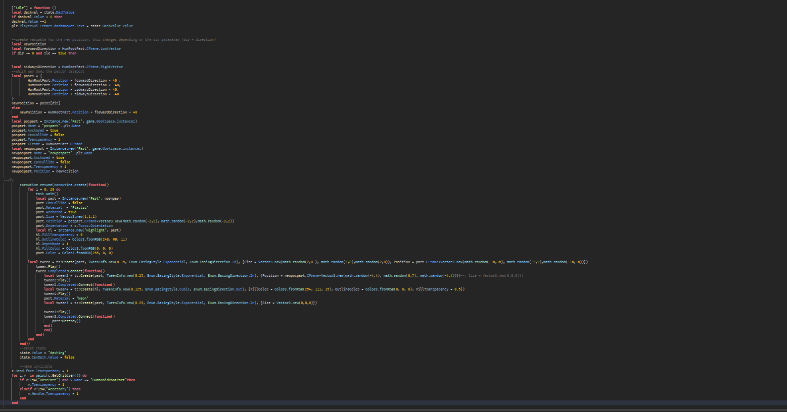
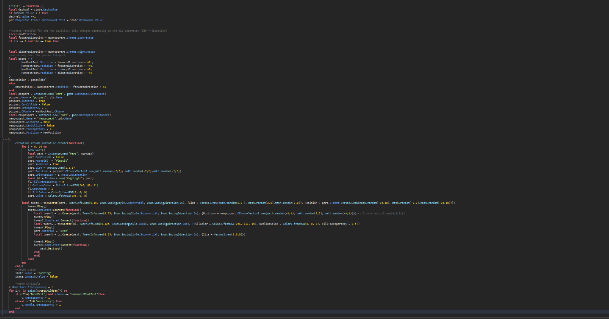

I have 2 years of experience working with Roblox Studio, and I’m also a web developer. Currently, my focus is on front-end development, but I am continually expanding my skill set in various areas. As I grow, my portfolio will evolve to showcase these skills.
At the moment, I’m looking to create games for people in Roblox Studio, focusing on creating functional and engaging game mechanics.
Current Projects
Bones (React)
A non-profit app designed to help people quit addiction. It focuses on building the core features and user interface. Built using React, this project involves managing state, component logic, and integrating notifications for user engagement.
Roblox Game (Advanced)
A complex Roblox game project requiring careful handling of massive amounts of data and optimization for performance. The scale and depth of this project present a huge challenge, but it's a great addition to my portfolio as I work through complex game mechanics, data management, and optimization.
Website for a Client (C# and JavaScript)
I’m currently building a professional website with a local admin portal for content management. The back-end is powered by C#, and the front-end uses JavaScript. The website will allow the client to manage data, so ensuring security and usability is essential. Additionally, I’m using AWS for hosting and backend management.
School Unity Project
This Unity project is my first real portfolio piece, featuring:
This Unity project is my first real portfolio piece, featuring:
Procedural Generation: Creating dynamic, generated environments.
Good Combat Mechanics: Polishing combat systems to ensure smooth and engaging gameplay.
Parkour Mechanics: Implementing smooth parkour movements for player navigation.
OOP Best Practices: Demonstrating my proficiency in object-oriented programming (OOP).
i will add a github link as soon as i made some more progress, i also have some other links ill add later when i have more
Future Projects
Bones with Advanced Backend
After completing the client-side version of the Bones app, I plan to enhance its backend to handle more complex data and user interactions. The advanced backend will ensure data security and scalability for a better user experience.
Multiplayer Game from Scratch
One of my future goals is to develop a multiplayer game from scratch. This will involve server-client communication, player matchmaking, and synchronizing data across multiple players. It's a large challenge, but I'm excited to dive into this kind of project soon!
Examples of My Work
Below are some examples of my basic work in game development. These projects are intended to show the core functionality of different systems I’ve built, such as combat systems, inventory management, and teleportation.
Simple Sword Dash
My Most Recent Project: Inventory System
Very Basic M1 Combat System
Teleport System
I’ve also included some code snippets below to demonstrate the teleport system. These are a few screenshots showing the basic stages of development for the system.

 
